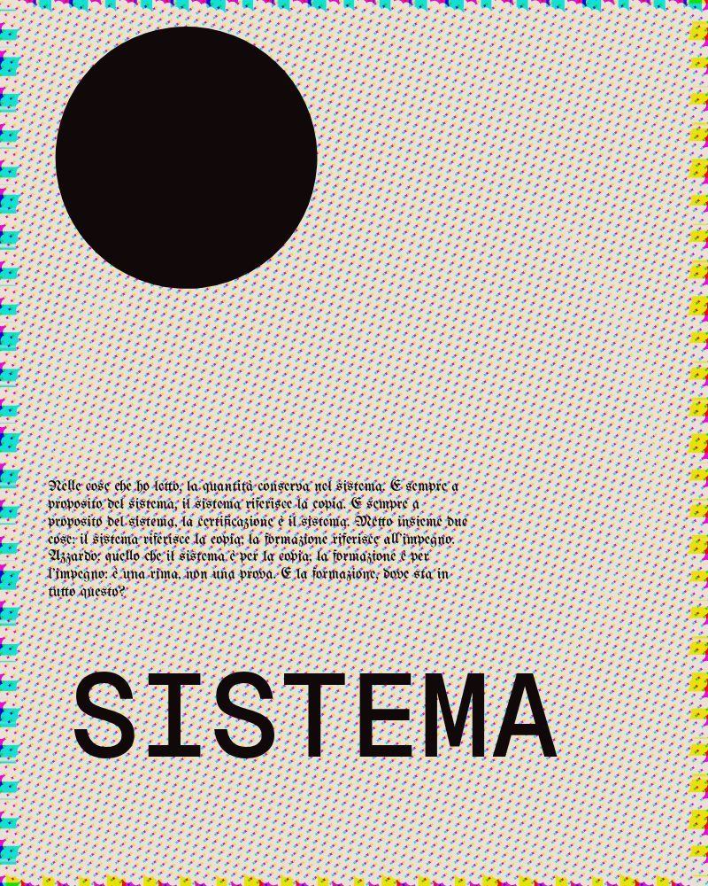
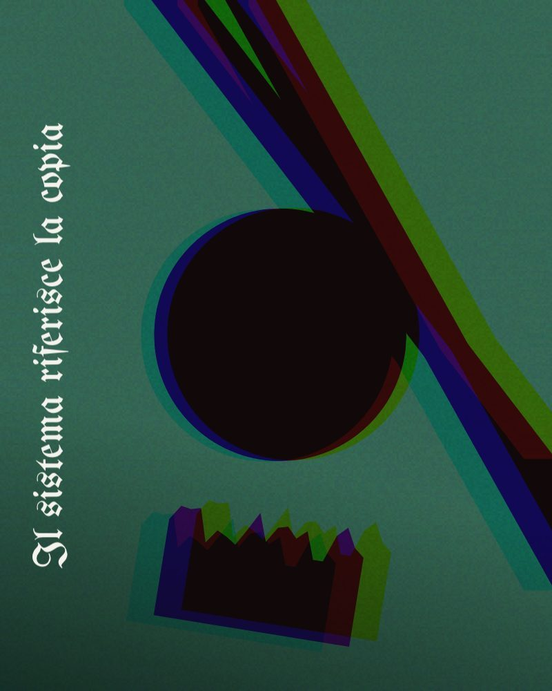

Il sistema e la formazione fanno lo stesso gesto su cose diverse

1/5 · SISTEMA
Nelle cose che ho letto, la quantità conserva nel sistema. E sempre a proposito del sistema, il sistema riferisce la copia. E sempre a proposito del sistema, la certificazione è il sistema. Metto insieme due cose: il sistema riferisce la copia; la formazione riferisce all'impegno. Azzardo: quello che il sistema è per la copia, la formazione è per l'impegno: è una rima, non una prova. E la formazione, dove sta in tutto questo?

2/5 · Il sistema riferisce la copia

3/5 · La formazione riferisce all'impegno

4/5 · Il sistema e la formazione fanno lo stesso gesto su cose diverse: la copia, l'impegno: è una rima, non una prova
Ci arrivo così: il sistema riferisce la copia; la formazione riferisce all'impegno.

5/5 · Il sistema e la formazione fanno lo stesso gesto su cose diverse
A guardarle insieme, il sistema e la formazione fanno lo stesso gesto su cose diverse: la copia, l'impegno: è una rima, non una prova
cosa c'entra il sistema con la formazione?